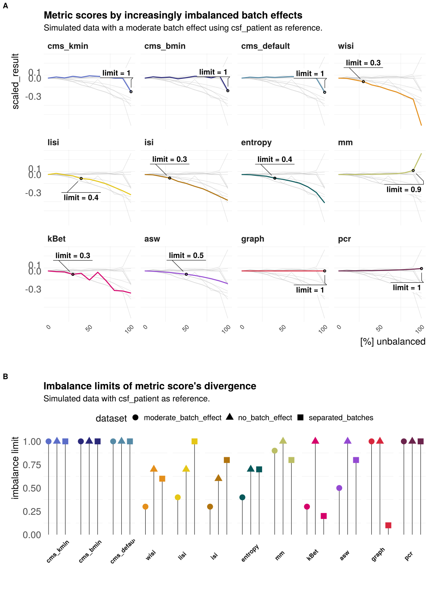

Figures benchmark
Almut Lütge
25 November, 2020
Benchmark figures mixing metrics
suppressPackageStartupMessages({
library(cowplot)
library(hrbrthemes)
library(ggplot2)
library(jcolors)
library(ComplexHeatmap)
library(dplyr)
})
cols_data <-c(c(jcolors('pal6'),jcolors('pal8'))[c(1,8,14,5,2:4,6,7,9:13,15:20)],jcolors('pal4'))
names(cols_data) <- c()Get figure objects
# random mixing
random_tsne <- readRDS(params$random_tsne)
random_res_all <- readRDS(params$random_res_all)
random_pbmc <- readRDS(params$random_pbmc)
random_cms <- readRDS(params$random_cms)
random_lisi <- readRDS(params$random_lisi)
random_ent <- readRDS(params$random_ent)
random_mm <- readRDS(params$random_mm)
random_pcr <- readRDS(params$random_pcr)
random_kbet <- readRDS(params$random_kbet)
# scaling and batch limits simulation
limit_scaling <- readRDS(params$sca_limit)
correlation_scaling <- readRDS(params$sca_cor)
trade_off <- readRDS(params$sca_trade_off)
sim_data <- readRDS(params$sim_data)
sim_scal_dist <- readRDS(params$sim_scal_dist)
# unbalanced mixing
unb_moderate <- readRDS(params$unb_moderate)
unb_limit <- readRDS(params$unb_limit)
# batch characteristics
cor_char <- readRDS(params$cor_char)
h_size <- readRDS(params$h_size)
h_type <- readRDS(params$h_type)
h_ct_spec <- readRDS(params$h_ct_spec)
lfc_dist <- readRDS(params$lfc_dist)
tsne_type <- readRDS(params$tsne_type)
rel_cells <- readRDS(params$rel_cells)
rel_genes <- readRDS(params$rel_genes)
gi_legend <- readRDS(params$gi_legend)
h_gi <- readRDS(params$h_gi)
tern <- readRDS(params$tern)## Registered S3 methods overwritten by 'ggtern':
## method from
## grid.draw.ggplot ggplot2
## plot.ggplot ggplot2
## print.ggplot ggplot2tern_nopan <- readRDS(params$tern_nopan)
den_1 <- readRDS(params$den1)
den_2 <- readRDS(params$den2)
met_char <- readRDS(params$met_char)
# correlation (and summary?)
cor <- readRDS(params$cor)
cor_legend <- readRDS(params$cor_legend)
summary <- readRDS(params$summary)
# general
out_path <- params$out_path
#Simulation
tern_sim <- readRDS(params$tern_sim)
den_3 <- readRDS(params$den3)
den_4 <- readRDS(params$den4)
den_5 <- readRDS(params$den5)
sim_1 <- readRDS(params$sim1)
sim_2 <- readRDS(params$sim2)
sim_3 <- readRDS(params$sim3)
# time and memory
time <- readRDS(params$time)
mem <- readRDS(params$mem)
#themes
theme_def <- theme_ipsum(base_family = 'Helvetica',
strip_text_face = "bold",
axis_title_size = 25,
strip_text_size = 22,
base_size = 25) +
theme(
legend.position="top",
plot.title = element_text(size=26),
plot.subtitle = element_text(size=20),
panel.grid.major = element_blank(),
axis.text.x = element_blank(),
axis.text.y = element_blank(),
panel.spacing = unit(1, "lines")
)
theme_axis <- theme_ipsum(base_family = 'Helvetica',
strip_text_face = "bold",
axis_title_size = 25,
strip_text_size = 22,
plot_margin = margin(5, 5, 5, 5),
base_size = 25) +
theme(
legend.position="top",
plot.title = element_text(size=26),
axis.text.x = element_text(size=16),
panel.grid.major = element_blank(),
panel.spacing = unit(1, "lines")
)
theme_axis_long <- theme_ipsum(base_family = 'Helvetica',
strip_text_face = "bold",
axis_title_size = 25,
strip_text_size = 22,
base_size = 25) +
theme(
legend.position="top",
plot.title = element_text(size=26),
panel.grid.major = element_blank(),
axis.text.x = element_text(size=16, angle=45, hjust = 1),
panel.spacing = unit(1, "lines")
)
theme_summary <- theme_ipsum(base_family = 'Helvetica',
strip_text_face = "bold",
axis_title_size = 24,
strip_text_size = 22,
base_size = 22) +
theme(
legend.position="top",
plot.title = element_text(size=26),
axis.text.x = element_text(size=18),
panel.spacing = unit(1, "lines")
)Figure Benchmark random
p1 <- random_tsne
batch_int <- c("batch0", "batch30", "batch60", "batch100")
p1_1 <- p1 %+% p1$data[p1$data$randomness %in% batch_int,]
p1_1$layers[[1]]$aes_params$size <- 1
p1_1$layers[[1]]$aes_params$alpha <- 0.5
p1_1 <- p1_1 + guides(colour = guide_legend(override.aes = list(size=7))) +
scale_colour_manual(values = c("#1D2645FF", "#E75B64FF")) +
theme_def## Scale for 'colour' is already present. Adding another scale for 'colour',
## which will replace the existing scale.p1_1$facet$params$ncol <- 4
p2 <- random_res_all +
labs(title = "Mean score with increased number of randomly shuffled labels",
subtitle = "Dataset with clearly separated batches (see A)") +
theme_def +
xlab("% random batch label") +
theme(axis.text.x = element_text(size=18),
axis.text.y = element_text(size=18))
p2$data$metric <- recode(p2$data$metric, cms.kmin80 = "cms_kmin", cms.bmin80 = "cms_bmin",
cms.batch = "cms_default", graph_connectivity = "graph", kbet = "kBet")
p2$data$metric2 <- recode(p2$data$metric2, cms.kmin80 = "cms_kmin", cms.bmin80 = "cms_bmin",
cms.batch = "cms_default", graph_connectivity = "graph", kbet = "kBet")
p2$facet$params$ncol <- 6
p_random <- plot_grid(p1_1, p2, labels = c('A', 'B'), label_size = 20, ncol = 1,
rel_heights = c(1.4, 2))
p_random
ggsave(filename = paste0(out_path, "results_random.pdf"), plot = p_random,
dpi = 600)## Saving 16 x 18 in imageSupplementary figure random
p3 <- random_pbmc +
labs(title = "Mean score with increased number of randomly shuffled labels",
subtitle = "Dataset with moderate batch effect") +
theme_axis
p3$data$metric <- recode(p3$data$metric, cms.kmin80 = "cms_kmin", cms.bmin80 = "cms_bmin",
cms.batch = "cms_default", graph_connectivity = "graph", kbet = "kBet")
p3$data$metric2 <- recode(p3$data$metric2, cms.kmin80 = "cms_kmin", cms.bmin80 = "cms_bmin",
cms.batch = "cms_default", graph_connectivity = "graph", kbet = "kBet")
p3 <- plot_grid(p3)
p3
ggsave(filename = paste0(out_path, "results_random_pbmc.pdf"), plot = p3,
dpi = 600)## Saving 12 x 12 in imagep1 <- random_cms + ylab("random batch label [%]") +
xlab("cms_default") +
labs(title = "Cms score distributions") + theme_def +
scale_y_discrete(breaks=c("cms.batch0","cms.batch20","cms.batch40", "cms.batch60",
"cms.batch80", "cms.batch100"),
labels=c("0", "20", "40", "60", "80", "100")) +
theme(legend.position = "none",
axis.text.x = element_text(size=18),
axis.text.y = element_text(size=18))
p2 <- random_lisi + ylab("") +
labs(title = "Lisi score distributions") + theme_def +
xlab("lisi") +
scale_y_discrete(breaks=c("lisi.batch0","lisi.batch20","lisi.batch40", "lisi.batch60",
"lisi.batch80", "lisi.batch100"),
labels=c("0", "20", "40", "60", "80", "100")) +
theme(legend.position = "none",
axis.text.x = element_text(size=18),
axis.text.y = element_text(size=18))
p3 <- random_ent + ylab("random batch label [%]") +
xlab("entropy") +
labs(title = "Entropy score distributions") + theme_def +
scale_y_discrete(breaks=c("entropy_batch0","entropy_batch20","entropy_batch40", "entropy_batch60",
"entropy_batch80", "entropy_batch100"),
labels=c("0", "20", "40", "60", "80", "100")) +
theme(legend.position = "none",
axis.text.x = element_text(size=18),
axis.text.y = element_text(size=18))
p4 <- random_mm + ylab("") +
xlab("mixing metric") +
labs(title = "Mm score distributions") + theme_def +
scale_y_discrete(breaks=c("mm_batch0","mm_batch20","mm_batch40", "mm_batch60",
"mm_batch80", "mm_batch100"),
labels=c("0", "20", "40", "60", "80", "100")) +
theme(legend.position = "none",
axis.text.x = element_text(size=18),
axis.text.y = element_text(size=18))
p5 <- random_pcr + ylab("random batch label [%]") +
xlab("pcr") +
labs(title = "Pcr score distributions") + theme_def +
scale_y_discrete(breaks=c("pcr.batch0","pcr.batch20","pcr.batch40", "pcr.batch60",
"pcr.batch80", "pcr.batch100"),
labels=c("0", "20", "40", "60", "80", "100")) +
theme(legend.position = "none",
axis.text.x = element_text(size=18),
axis.text.y = element_text(size=18))
p6 <- random_kbet + ylab("") +
xlab("kBet") +
labs(title = "kBet score distributions") + theme_def +
scale_y_discrete(breaks=c("kbet.batch0","kbet.batch20","kbet.batch40", "kbet.batch60",
"kbet.batch80", "kbet.batch100"),
labels=c("0", "20", "40", "60", "80", "100")) +
theme(legend.position = "none",
axis.text.x = element_text(size=18),
axis.text.y = element_text(size=18))
p_ran_met <- plot_grid(p1, p2, p3, p4, p5, p6,
labels = c('A', 'B', 'C', 'D', 'E', 'F'), label_size = 20,
ncol = 2)## Picking joint bandwidth of 0.0395## Picking joint bandwidth of 0.0939## Picking joint bandwidth of 0.0134## Picking joint bandwidth of 2.21## Picking joint bandwidth of 0.000674## Picking joint bandwidth of 0.0124## Warning: Removed 495 rows containing non-finite values (stat_density_ridges).p_ran_met
ggsave(filename = paste0(out_path, "results_random_mets.pdf"), plot = p_ran_met,
dpi = 600)## Saving 17 x 20 in imageFigure Scaling and batch limits
p2 <- limit_scaling +
theme_axis_long +
theme(legend.position = "none") +
ggtitle("Batch detection limits")
p2$data$metric <- recode(p2$data$metric, cms.kmin = "cms_kmin", cms.bmin = "cms_bmin",
cms.batch_id = "cms_default", graph.connectivity = "graph", kbet = "kBet")
p1 <- correlation_scaling +
theme_axis_long +
theme(legend.position = "none") +
ggtitle("Scaling")
p1$data$metric <- recode(p1$data$metric, cms.kmin = "cms_kmin", cms.bmin = "cms_bmin",
cms.batch_id = "cms_default", graph.connectivity = "graph", kbet = "kBet")
p3 <- sim_data
p3$layers[[1]]$aes_params$size <- 1
p3$layers[[1]]$aes_params$alpha <- 0.5
sim_int <- c("0", "0.6", "1", "2")
p3_1 <- p3 %+% p3$data[p3$data$batch_size %in% sim_int,]
p3_1 <- p3_1 +
scale_colour_manual(values = c("#1D2645FF", "#E75B64FF")) +
theme_def + theme(legend.position = "bottom") +
labs(title = "Simulation with incresing batch logFC")## Scale for 'colour' is already present. Adding another scale for 'colour',
## which will replace the existing scale.p4 <- trade_off +
theme_axis_long +
xlab("mean limit") +
theme(legend.position = "bottom",
legend.box = "vertical",
legend.title = element_text(size = 18),
legend.text = element_text(size = 16))
p4$data$metric <- recode(p4$data$metric, cms.kmin = "cms_kmin", cms.bmin = "cms_bmin",
cms.batch_id = "cms_default", graph.connectivity = "graph", kbet = "kBet")
#p4 <- plot_grid(p4, "", ncol = 1, rel_heights = c(2,0.1))
p_sub1 <- plot_grid(p3_1, p1, labels = c('A', 'B'), align = "v",
label_size = 20, ncol = 2, rel_heights = c(1,1))## `stat_bindot()` using `bins = 30`. Pick better value with `binwidth`.## Warning: Graphs cannot be vertically aligned unless the axis parameter is set.
## Placing graphs unaligned.p_sub2 <- plot_grid(p2, p4, labels = c('C', 'D'), label_size = 20,
ncol = 2, rel_heights = c(1, 1))## `stat_bindot()` using `bins = 30`. Pick better value with `binwidth`.p_scaling <- plot_grid(p_sub1, p_sub2, ncol = 1, rel_heights = c(1, 1))
p_scaling
ggsave(filename = paste0(out_path, "results_scaling.pdf"), plot = p_scaling,
dpi = 600)## Saving 16 x 18 in imageSupplement figure: Score distributions scaling simulated
p_dist <- sim_scal_dist +
labs(title = "Mean score by relative batch strength",
subtitle = "Simulation series of 13 simulations with increasing batch effect.") +
xlab("batch logFC factor") +
theme_axis + theme(axis.text.x = element_text(size=22))
p_dist$data$metric <- recode(p_dist$data$metric, cms.kmin = "cms_kmin", cms.bmin = "cms_bmin",
cms.batch_id = "cms_default", graph.connectivity = "graph", kbet = "kBet")
p_dist$data$metric2 <- recode(p_dist$data$metric2, cms.kmin = "cms_kmin", cms.bmin = "cms_bmin",
cms.batch_id = "cms_default", graph.connectivity = "graph", kbet = "kBet")
p_dist$layers[[3]]$data$metric <- recode(p_dist$layers[[3]]$data$metric,
cms.kmin = "cms_kmin",
cms.bmin = "cms_bmin",
cms.batch_id = "cms_default",
graph.connectivity = "graph",
kbet = "kBet")
p_dist$layers[[4]]$data$metric <- recode(p_dist$layers[[3]]$data$metric,
cms.kmin = "cms_kmin",
cms.bmin = "cms_bmin",
cms.batch_id = "cms_default",
graph.connectivity = "graph",
kbet = "kBet")
p_dist <- plot_grid(p_dist)
p_dist
ggsave(filename = paste0(out_path, "results_sim_scal_dist.pdf"), plot = p_dist,
dpi = 600)## Saving 12 x 12 in imageFigure unbalanced batch effects
unb_moderate$layers[[3]]$data$metric <- recode(unb_moderate$layers[[3]]$data$metric,
cms.kmin = "cms_kmin",
cms.bmin = "cms_bmin",
cms.batch_id = "cms_default",
graph.connectivity = "graph",
kbet = "kBet")
p1 <- unb_moderate +
theme_axis_long +
theme(legend.position = "top",
plot.subtitle = element_text(size = 22),
axis.text.x = element_text(size=16)) +
scale_y_continuous(breaks=c(-0.3, 0, 0.1)) +
scale_x_continuous(breaks = c(0,0.5, 1), labels = c("0", "50", "100")) +
xlab("[%] unbalanced") +
ggtitle("Metric scores by increasingly imbalanced batch effects",
subtitle = "Simulated data with a moderate batch effect using csf_patient as reference.")
p1$data$metric <- recode(p1$data$metric, cms.kmin = "cms_kmin", cms.bmin = "cms_bmin",
cms.batch_id = "cms_default", graph.connectivity = "graph", kbet = "kBet")
# p2 <- unb_limit +
# theme_axis_long +
# ylab('unbalance limit') +
# theme(legend.position = "top",
# axis.text.x = element_text(size=20, angle=45, hjust = 1)) +
# ggtitle("Imbalance limits of metric score's divergence")
p2 <- unb_limit +
theme_axis_long +
ylab('imbalance limit') +
theme(legend.position = "top",
plot.subtitle = element_text(size = 22),
axis.text.x = element_blank(),
strip.text.x = element_text(size = 16, angle=45, hjust = 0.2)) +
ggtitle("Imbalance limits of metric score's divergence",
subtitle = "Simulated data with csf_patient as reference.")
# p2$data$metric <- recode(p2$data$metric, cms.kmin = "cms_kmin", cms.bmin = "cms_bmin",
# cms.batch_id = "cms_default", graph.connectivity = "graph", kbet = "kBet")
p2$layers[[2]]$aes_params$size <- 7
p_unbalanced <- plot_grid(p1, "", p2, labels = c('A','', 'B'), label_size = 20, ncol = 1,
rel_heights = c(14,0.5,9))## Warning in as_grob.default(plot): Cannot convert object of class character into
## a grob.p_unbalanced
ggsave(filename = paste0(out_path, "results_unbalanced.pdf"), plot = p_unbalanced,
dpi = 600)## Saving 16 x 22 in imageSummary and correlation
p2 <- plot_grid(plotlist = cor)
p2_legend <- cor_legend
p2_ <- plot_grid("", p2, p2_legend, ncol = 3, rel_widths = c(0.1, 1, 0.3))
p2_title <- ggdraw() +
draw_label(
"Metrics correlation - by benchmark task",
fontface = 'bold',
x = 0,
size = 20,
hjust = - 0.3,
vjust = 0.5) +
theme_def +
theme(plot.margin = margin(0, 0, 0, 7))
p2_new <- plot_grid(p2_title, p2_, "", ncol = 1, rel_heights = c(0.15, 1, 0.15))
p2_new
p1 <- summary + theme_summary +
theme(legend.position = "top")
p1$data$metric <- recode(p1$data$metric, graph.connectivity = "graph", kbet = "kBet")
p1$layers[[1]]$aes_params$size <- 16
p1_new <- plot_grid("", p1, "", ncol = 1, labels = c('A','', ''),
label_size = 20, rel_heights = c(0.01, 1, 0.01))
p_summary <- plot_grid(p1)
p_summary
p_cor <- plot_grid(p2_new)
p_cor
ggsave(filename = paste0(out_path, "results_summary.pdf"), plot = p_summary, dpi = 600)
ggsave(filename = paste0(out_path, "results_correlation.pdf"), plot = p_cor, dpi = 600)Figure characterization supplement
## Plot characteristics
p_size <- grid.grabExpr(draw(h_size))
p_ct <- grid.grabExpr(draw(h_ct_spec))
pct_title <- ggdraw() +
draw_label("Batch characteristics",
fontface = 'bold', x = 0, size = 20, hjust = - 0.3, vjust = 0.5) +
theme(plot.margin = margin(0, 0, 0, 7))
p_ct1 <- plot_grid(pct_title, p_ct, "", labels = c('', '', ''), label_size = 20,
ncol = 1, rel_heights = c(2, 10, 1))## Warning in as_grob.default(plot): Cannot convert object of class character into
## a grob.p_lfc <- grid.grabExpr(draw(lfc_dist))
plfc_title <- ggdraw() +
draw_label("Batch logFC distribution across cell-types",
fontface = 'bold', x = 0, size = 20, hjust = - 0.3, vjust = 0.5) +
theme(plot.margin = margin(0, 0, 0, 7))
p_lfc1 <- plot_grid(plfc_title, p_lfc, ncol = 1, rel_heights = c(1, 10))
p_lfc2 <- plot_grid('', p_lfc1, '', labels = c('B', '', ''), label_size = 20,
ncol = 3, rel_widths = c(1, 10, 0.5))## Warning in as_grob.default(plot): Cannot convert object of class character into
## a grob.
## Warning in as_grob.default(plot): Cannot convert object of class character into
## a grob.p_char <- plot_grid(p_ct1, p_lfc2, ncol = 1, rel_heights = c(1.5, 1))
p_char
### Plot batch types
p_type <- grid.grabExpr(draw(h_type))
ptype_title <- ggdraw() +
draw_label("Batch types: Bias after adjustment",
fontface = 'bold', x = 0, size = 20, hjust = - 0.3, vjust = 0.5) +
theme(plot.margin = margin(0, 0, 0, 7))
p_type1 <- plot_grid(ptype_title, p_type, "", labels = c('B', '', ''),
label_size = 20, ncol = 1, rel_heights = c(2, 10, 1))## Warning in as_grob.default(plot): Cannot convert object of class character into
## a grob.p_tsne <- tsne_type + theme_def +
theme(plot.title = element_text(size = 20))
p_tsne <- plot_grid('', p_tsne, '', labels = c('A', '', ''),
label_size = 20, ncol = 3, rel_widths = c(0.4,10, 0.7))## Warning in as_grob.default(plot): Cannot convert object of class character into
## a grob.
## Warning in as_grob.default(plot): Cannot convert object of class character into
## a grob.p3 <- plot_grid(p_tsne, p_type1, ncol = 1, rel_heights = c(1.1, 1) )
p3
### Save plots
ggsave(filename = paste0(out_path, "results_type.pdf"), plot = p3, dpi = 600)## Saving 12 x 15 in imageggsave(filename = paste0(out_path, "results_char.pdf"), plot = p_char, dpi = 600)## Saving 12 x 15 in imageFigure Characterization short supplement
ggsave(filename = paste0(out_path, "results_char_short.pdf"), plot = p_ct1, dpi = 600)## Saving 12 x 8 in imageResults summary metrics and batch characteristics
# p1_1 <- cor_char + theme_axis_long +
# theme(legend.position = "right",
# axis.text.x = element_text(size=22, angle=45, hjust = 1))
#
# p_char_metrics <- plot_grid('', p1_1, ncol = 2,
# rel_widths = c(0.5,10))
#
# p_char_metrics
#
# ggsave(filename = paste0(out_path, "results_char_metrics.pdf"), plot = p1_1,
# dpi = 600)
met_char$data$metric <- recode(met_char$data$metric, cms.kmin80 = "cms_kmin", cms.bmin80 = "cms_bmin",
cms = "cms_default", graph_connectivity = "graph", kbet = "kBet")
p_task1 <- met_char +
theme_axis +
xlab('mean PVE-Batch') +
ylab('scaled metric score') +
guides(linetype=guide_legend(keywidth = 3, keyheight = 1)) +
scale_linetype_discrete("characteristics", labels = c("DE genes", "PVE-Batch")) +
theme(legend.position = "bottom",
axis.text.x = element_text(size=25)) +
ggtitle("Metric scores and batch characteristics across datasets")
p_task1
ggsave(filename = paste0(out_path, "results_char_metrics.pdf"), plot = p_task1)## Saving 14 x 14 in imageFigure characterization varPart
library(ggtern)## --
## Remember to cite, run citation(package = 'ggtern') for further info.
## --##
## Attaching package: 'ggtern'## The following objects are masked from 'package:ggplot2':
##
## aes, annotate, ggplot, ggplot_build, ggplot_gtable, ggplotGrob,
## ggsave, layer_data, theme_bw, theme_classic, theme_dark,
## theme_gray, theme_light, theme_linedraw, theme_minimal, theme_void## Plot characteristics
p_gi <- grid.grabExpr(draw(h_gi, annotation_legend_list = gi_legend))
p_gi1 <- plot_grid('', p_gi, '', labels = c('A', '', ''), label_size = 20,
ncol = 3, rel_widths = c(0.1, 2, 0.1))## Warning in as_grob.default(plot): Cannot convert object of class character into
## a grob.
## Warning in as_grob.default(plot): Cannot convert object of class character into
## a grob.p_tern <- ggplotGrob(tern)## Warning: Computation failed in `stat_density_tern()`:
## unused argument (z.range = z.range)## Warning: Computation failed in `stat_density_tern()`:
## unused argument (z.range = z.range)
## Warning: Computation failed in `stat_density_tern()`:
## unused argument (z.range = z.range)
## Warning: Computation failed in `stat_density_tern()`:
## unused argument (z.range = z.range)
## Warning: Computation failed in `stat_density_tern()`:
## unused argument (z.range = z.range)
## Warning: Computation failed in `stat_density_tern()`:
## unused argument (z.range = z.range)
## Warning: Computation failed in `stat_density_tern()`:
## unused argument (z.range = z.range)
## Warning: Computation failed in `stat_density_tern()`:
## unused argument (z.range = z.range)
## Warning: Computation failed in `stat_density_tern()`:
## unused argument (z.range = z.range)den1 <- grid.grabExpr(draw(den_1, heatmap_legend_side = "bottom", annotation_legend_side = "bottom"))
den2 <- grid.grabExpr(draw(den_2, heatmap_legend_side = "bottom", annotation_legend_side = "bottom"))
p_tern1 <- plot_grid(p_tern, labels = c('A'), label_size = 20, ncol = 1)
p_1 <- plot_grid('', den1, '', den2, '', ncol = 5, labels = c('B','', 'C', '', ''), label_size = 20,
rel_widths = c(0.2, 2, 0.1, 2, 0.2))## Warning in as_grob.default(plot): Cannot convert object of class character into
## a grob.## Warning in as_grob.default(plot): Cannot convert object of class character into
## a grob.
## Warning in as_grob.default(plot): Cannot convert object of class character into
## a grob.plfc_title <- ggdraw() +
draw_label("Batch logFC distribution across cell types",
fontface = 'bold', x = 0, size = 22, hjust = - 0.2, vjust = 0) +
theme(plot.margin = margin(0, 0, 0, 0))
p_den1 <- plot_grid(plfc_title, p_1, ncol = 1, labels = c('', ''), label_size = 20,
rel_heights = c(1, 10))
p_tern_den <- plot_grid(p_tern1,'', p_den1, ncol = 1, rel_heights = c(1.7, 0.04, 0.8))## Warning in as_grob.default(plot): Cannot convert object of class character into
## a grob.# p_char2 <- plot_grid(p_gi1, p_tern_den, ncol = 1, rel_heights = c(0.7, 3),
# labels = c('', ''), label_size = 20)
### Save plots
ggsave(filename = paste0(out_path, "results_char_tern.pdf"), plot = p_tern_den, dpi = 600)## Saving 15 x 20 in image## Warning in grid.Call.graphics(C_text, as.graphicsAnnot(x$label), x$x, x$y, :
## font width unknown for character 0x9## Warning in grid.Call.graphics(C_text, as.graphicsAnnot(x$label), x$x, x$y, :
## font width unknown for character 0x9
## Warning in grid.Call.graphics(C_text, as.graphicsAnnot(x$label), x$x, x$y, :
## font width unknown for character 0x9
## Warning in grid.Call.graphics(C_text, as.graphicsAnnot(x$label), x$x, x$y, :
## font width unknown for character 0x9
## Warning in grid.Call.graphics(C_text, as.graphicsAnnot(x$label), x$x, x$y, :
## font width unknown for character 0x9
## Warning in grid.Call.graphics(C_text, as.graphicsAnnot(x$label), x$x, x$y, :
## font width unknown for character 0x9
## Warning in grid.Call.graphics(C_text, as.graphicsAnnot(x$label), x$x, x$y, :
## font width unknown for character 0x9
## Warning in grid.Call.graphics(C_text, as.graphicsAnnot(x$label), x$x, x$y, :
## font width unknown for character 0x9
## Warning in grid.Call.graphics(C_text, as.graphicsAnnot(x$label), x$x, x$y, :
## font width unknown for character 0x9Supplementary figure(s) Simulation
tern1_title <- ggdraw() +
draw_label("Real data",
fontface = 'bold', x = 0, size = 30, hjust = - 0.5, vjust = 0.5) +
theme(plot.margin = margin(0, 0, 0, 0))
tern2_title <- ggdraw() +
draw_label("Simulated data",
fontface = 'bold', x = 0, size = 30, hjust = - 0.5, vjust = 0.5) +
theme(plot.margin = margin(0, 0, 0, 0))
p_tern_sim <- ggplotGrob(tern_sim)## Warning: Computation failed in `stat_density_tern()`:
## unused argument (z.range = z.range)
## Warning: Computation failed in `stat_density_tern()`:
## unused argument (z.range = z.range)
## Warning: Computation failed in `stat_density_tern()`:
## unused argument (z.range = z.range)
## Warning: Computation failed in `stat_density_tern()`:
## unused argument (z.range = z.range)
## Warning: Computation failed in `stat_density_tern()`:
## unused argument (z.range = z.range)
## Warning: Computation failed in `stat_density_tern()`:
## unused argument (z.range = z.range)
## Warning: Computation failed in `stat_density_tern()`:
## unused argument (z.range = z.range)
## Warning: Computation failed in `stat_density_tern()`:
## unused argument (z.range = z.range)p_tern_nopan <- ggplotGrob(tern_nopan)## Warning: Computation failed in `stat_density_tern()`:
## unused argument (z.range = z.range)
## Warning: Computation failed in `stat_density_tern()`:
## unused argument (z.range = z.range)
## Warning: Computation failed in `stat_density_tern()`:
## unused argument (z.range = z.range)
## Warning: Computation failed in `stat_density_tern()`:
## unused argument (z.range = z.range)
## Warning: Computation failed in `stat_density_tern()`:
## unused argument (z.range = z.range)
## Warning: Computation failed in `stat_density_tern()`:
## unused argument (z.range = z.range)
## Warning: Computation failed in `stat_density_tern()`:
## unused argument (z.range = z.range)
## Warning: Computation failed in `stat_density_tern()`:
## unused argument (z.range = z.range)p_tern1 <- plot_grid(tern1_title, p_tern_nopan, labels = c('A', ''), label_size = 20, ncol = 1, rel_heights = c(0.2,10))
p_tern2 <- plot_grid(tern2_title, p_tern_sim, labels = c('B', ''), label_size = 20, ncol = 1, rel_heights = c(0.2,10))
p_tern_com <- plot_grid(p_tern1, "", p_tern2, ncol = 3, rel_widths = c(1, 0.1, 1))## Warning in as_grob.default(plot): Cannot convert object of class character into
## a grob.### Save plots
ggsave(filename = paste0(out_path, "results_sim_tern.pdf"), plot = p_tern_com, dpi = 600)## Saving 18 x 20 in image## Warning in grid.Call.graphics(C_text, as.graphicsAnnot(x$label), x$x, x$y, :
## font width unknown for character 0x9## Warning in grid.Call.graphics(C_text, as.graphicsAnnot(x$label), x$x, x$y, :
## font width unknown for character 0x9
## Warning in grid.Call.graphics(C_text, as.graphicsAnnot(x$label), x$x, x$y, :
## font width unknown for character 0x9
## Warning in grid.Call.graphics(C_text, as.graphicsAnnot(x$label), x$x, x$y, :
## font width unknown for character 0x9
## Warning in grid.Call.graphics(C_text, as.graphicsAnnot(x$label), x$x, x$y, :
## font width unknown for character 0x9
## Warning in grid.Call.graphics(C_text, as.graphicsAnnot(x$label), x$x, x$y, :
## font width unknown for character 0x9
## Warning in grid.Call.graphics(C_text, as.graphicsAnnot(x$label), x$x, x$y, :
## font width unknown for character 0x9
## Warning in grid.Call.graphics(C_text, as.graphicsAnnot(x$label), x$x, x$y, :
## font width unknown for character 0x9
## Warning in grid.Call.graphics(C_text, as.graphicsAnnot(x$label), x$x, x$y, :
## font width unknown for character 0x9
## Warning in grid.Call.graphics(C_text, as.graphicsAnnot(x$label), x$x, x$y, :
## font width unknown for character 0x9
## Warning in grid.Call.graphics(C_text, as.graphicsAnnot(x$label), x$x, x$y, :
## font width unknown for character 0x9
## Warning in grid.Call.graphics(C_text, as.graphicsAnnot(x$label), x$x, x$y, :
## font width unknown for character 0x9
## Warning in grid.Call.graphics(C_text, as.graphicsAnnot(x$label), x$x, x$y, :
## font width unknown for character 0x9
## Warning in grid.Call.graphics(C_text, as.graphicsAnnot(x$label), x$x, x$y, :
## font width unknown for character 0x9
## Warning in grid.Call.graphics(C_text, as.graphicsAnnot(x$label), x$x, x$y, :
## font width unknown for character 0x9
## Warning in grid.Call.graphics(C_text, as.graphicsAnnot(x$label), x$x, x$y, :
## font width unknown for character 0x9den1_title <- ggdraw() +
draw_label("Real data",
fontface = 'bold', x = 0, size = 30, hjust = -0.5, vjust = 0.5) +
theme(plot.margin = margin(0, 0, 0, 0))
den2_title <- ggdraw() +
draw_label("Simulated data",
fontface = 'bold', x = 0, size = 30, hjust = -0.5, vjust = 0.5) +
theme(plot.margin = margin(0, 0, 0, 0))
den1 <- grid.grabExpr(draw(den_3))
den2 <- grid.grabExpr(draw(den_4))
den3 <- grid.grabExpr(draw(den_5))
sim1 <- grid.grabExpr(draw(sim_1))
sim2 <- grid.grabExpr(draw(sim_2))
sim3 <- grid.grabExpr(draw(sim_3))
p_den <- plot_grid(den1_title, den1, den2, den3, labels = c('', 'A', 'C', 'E'), label_size = 20, ncol = 1, rel_heights = c(0.2,2,2,2,2))
p_sim <- plot_grid(den2_title, sim1, sim2, sim3, labels = c('', 'B', 'D', 'F'), label_size = 20, ncol = 1, rel_heights = c(0.2,2,2,2,2))
p_den_com <- plot_grid(p_den, p_sim, ncol = 2, rel_widths = c(1, 1))
### Save plots
ggsave(filename = paste0(out_path, "results_sim_den.pdf"), plot = p_den_com, dpi = 600)## Saving 16 x 18 in imageSupplemental figure: Correlation RVEB and number of cells resp. genes
p_cells <- rel_cells +
ggtitle("Number of cells")
p_genes <- rel_genes +
ggtitle("Number of genes")
p_rel <- plot_grid(p_cells, p_genes, ncol = 2,
rel_widths = c(1,1))
p_rel
ggsave(filename = paste0(out_path, "results_char_rel_corr_ext.pdf"), plot = p_rel,
dpi = 600)## Saving 12 x 18 in imageTime and memory
p_mem <- mem + theme_ipsum(base_family = 'Helvetica',
strip_text_face = "bold",
axis_title_size = 25,
strip_text_size = 22,
plot_margin = margin(5, 5, 5, 5),
base_size = 23) +
theme(
legend.position="none",
plot.title = element_text(size=26),
panel.grid.major = element_blank(),
panel.spacing = unit(1, "lines")
) + ggtitle("RSS")
p_time <- time + theme_ipsum(base_family = 'Helvetica',
strip_text_face = "bold",
axis_title_size = 25,
strip_text_size = 18,
base_size = 25) +
theme(
legend.position="bottom",
plot.title = element_text(size=26),
axis.text.x = element_text(size=25),
axis.text.y = element_text(size=25)
)
p_time_mem <- plot_grid(p_time, p_mem, ncol = 1,
rel_heights = c(1,0.9), labels = c('A', 'B'), label_size = 20)
p_time2 <- plot_grid(p_time)
ggsave(filename = paste0(out_path, "results_time_mem.pdf"), plot = p_time2,
dpi = 600)## Saving 13 x 10 in image